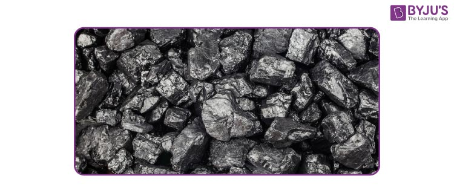

Non-renewable energy is energy sources that exist in finite quantities and cannot be naturally replenished or regenerated. These energy resources are formed through natural processes, such as the decomposition of organic matter or the nuclear reactions occurring in the Earth’s core. Non-renewable energy plays a significant role in meeting our current energy demands but poses challenges due to its finite nature and environmental impact.
Non-renewable energy has been the backbone of modern industrialization and has fueled economic growth for centuries. However, the finite nature of these resources calls for the exploration and development of sustainable alternatives, such as renewable energy sources like solar and wind.
Non-renewable resources primarily consist of fuels derived from fossil deposits. Let’s explore some of the most commonly utilised non-renewable energy sources:
Coal has long been a significant contributor to non-renewable energy production. Coal is formed from ancient plants’ remains and extracted from underground mines or surface mining methods. It is widely used in electricity generation and industrial processes, making it a prominent non-renewable energy resource.
Petroleum products are another essential component of non-renewable energy sources derived from crude oil. Crude oil is extracted from underground reservoirs and refined into various products, including gasoline, diesel, jet fuel, and heating oil.
CNG is sourced from natural gas reserves and compressed for use in vehicles, particularly in transportation fleets and as a fuel for natural gas power plants. CNG is gaining popularity due to its lower emissions and cost-effectiveness.
These non-renewable energy sources provide a significant portion of our energy needs. However, it is important to recognize their finite nature and explore alternative energy options to ensure a sustainable future.
Non-renewable energy primarily consists of fossil fuels and nuclear fuels. Let’s explore each of these types in detail:
Fossil fuels are formed from the remains of ancient plants and animals that underwent a process of decomposition over millions of years. They are categorized into three main types:
Natural gas is a gaseous fossil fuel composed mainly of methane. It is often found in association with oil deposits. Natural gas is a versatile energy source used for heating, cooking, electricity generation, and as a fuel for vehicles.
Coal is a solid fossil fuel that forms when plant material, such as trees, plants, and ferns, undergoes decomposition under high pressure and heat over millions of years. It is primarily used for electricity generation in power plants and is known for its significant carbon content.
Oil is a liquid fossil fuel that results from the decomposition of smaller organisms like zooplankton and algae, which were subjected to immense pressure over time. Oil is a crucial energy resource used in transportation, manufacturing, and producing various petrochemical products.
Nuclear fuels are utilised in nuclear power plants, where energy is generated through nuclear fission. The most commonly used nuclear fuel is uranium, found in the Earth’s crust in relatively low concentrations. Uranium undergoes fission reactions, releasing large amounts of energy.
Understanding the significance of both fossil fuels and nuclear fuels as non-renewable energy sources is important. While they have played a crucial role in meeting our energy demands, their extraction, use, and environmental impact must be carefully managed.